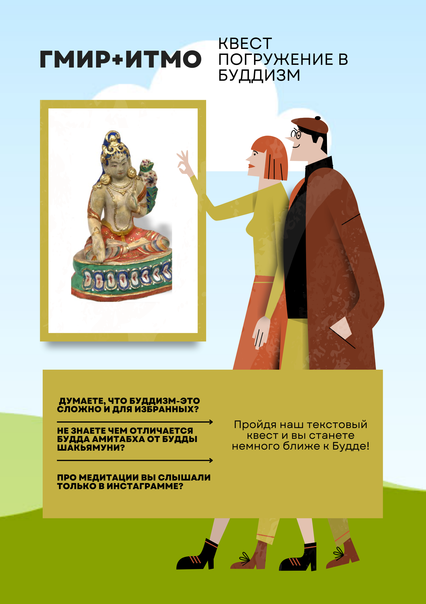

О проекте
Проект представляет собой текстовый квест, в котором игроку предлагается выполнить ряд интеллектуальных заданий, нацеленных на проверку знаний основ буддизма: праздников, ритуалов, священных текстов и предметов.
После прохождения игры пользователю даётся персональный комментарий и набор стикеров с Буддой для Telegram.

Примеры заданий